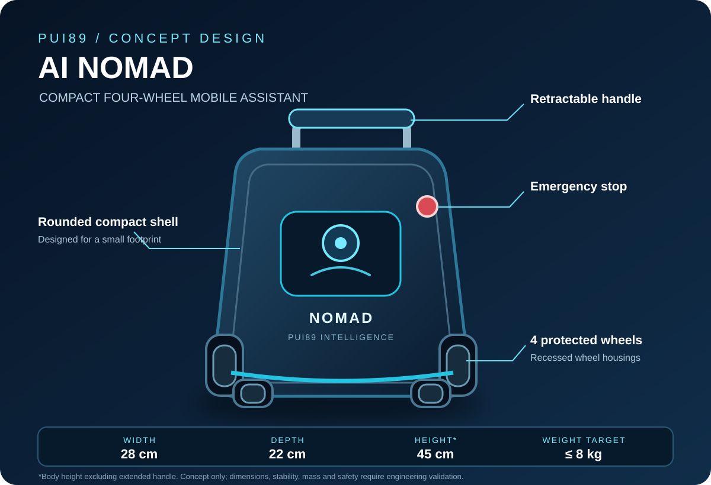

ตัวเครื่องกะทัดรัดทรงกระเป๋าเดินทาง พร้อมด้ามจับแบบยืดเก็บได้
ระดับความพร้อมโครงการขั้นที่ 1 จาก 5ความพร้อมเชิงพาณิชย์ 30%พื้นฐานซอฟต์แวร์ระยะแรก
PUI89 / AI Mobile Assistant Robot / ระบบในบ้านและกลางแจ้ง
PUI89 AI Mobile Assistant Robot
หุ่นยนต์ผู้ช่วยเคลื่อนที่ในบ้านและกลางแจ้ง
แนวคิดหุ่นยนต์ผู้ช่วยแบบ 4 ล้อขนาดกะทัดรัดสำหรับชีวิตประจำวันทั้งในบ้านและกลางแจ้ง ช่วยถือสัมภาระ เดินทาง และติดตามสภาพแวดล้อมภายใต้การดูแลของเจ้าของ ส่วน HOME ยังคงเป็นผลิตภัณฑ์เฉพาะด้านความปลอดภัยภายในบ้าน
แนวคิดที่เสนอ · ยังไม่ได้สร้าง · ยังไม่ได้ทดสอบ · ยังไม่ได้รับรอง
แนวคิดหุ่นยนต์ผู้ช่วยเคลื่อนที่แบบ 4 ล้อ
ล้อ 4 ล้อแบบมีส่วนป้องกันหรือซ่อนในตัวเครื่อง สำหรับการเคลื่อนที่อย่างควบคุมบนพื้นผิวในบ้านและกลางแจ้งที่เหมาะสม
ช่วยเหลือระหว่างการเดินทางและงานขนย้ายหรือติดตามบางประเภท
มุ่งเน้นความเร็วต่ำ การรับรู้สิ่งกีดขวาง และการทำงานภายใต้การกำกับของมนุษย์
แนวคิดที่เลือก: ตัวเครื่องทรงกระเป๋าขอบมน ล้อแบบมีส่วนป้องกัน และด้ามจับยืดเก็บได้ ออกแบบให้จัดเก็บและเคลื่อนย้ายสะดวกโดยไม่ใช้พื้นที่เกินจำเป็น
แนวทางความปลอดภัยที่เสนอ: ครอบป้องกันล้อ ขอบมน การกระจายน้ำหนักให้มั่นคง ปุ่มหยุดฉุกเฉินทางกายภาพ จำกัดการเคลื่อนที่ และสั่งหยุดเมื่อพบสิ่งกีดขวาง ทั้งหมดเป็นข้อกำหนดที่เสนอ ยังไม่ใช่ระบบที่ผ่านการตรวจสอบแล้ว
สถานะ: ข้อเสนอ / ยังไม่ได้วัด / ยังไม่ได้ตรวจสอบยืนยัน. ยังไม่เผยแพร่ขนาด น้ำหนัก ผังอุปกรณ์ภายใน หรือขีดจำกัดสมรรถนะในฐานะข้อมูลจำเพาะของผลิตภัณฑ์ ต้องตรวจสอบความมั่นคง พื้นที่เลี้ยว น้ำหนักบรรทุก แบตเตอรี่ ความร้อน ระบบหยุด และความทนทานต่อสภาพแวดล้อมก่อนยืนยันแบบ ยังไม่มีการกล่าวอ้างว่าสามารถขึ้นบันไดหรือวิ่งบนทรายลึก โคลน หรือพื้นขรุขระได้
แยกผลิตภัณฑ์อย่างชัดเจน
AI Mobile Assistant Robot มีคลังโครงการ รูปแบบทางกายภาพ ข้อกำหนดกลางแจ้ง กรอบความปลอดภัย และแผนตรวจสอบของตนเอง ส่วน HOME เป็นหุ่นยนต์ภายในบ้านแบบ 4 ล้ออีกโครงการหนึ่ง ทั้งสองโครงการอาจใช้สัญญาข้อมูล PUI89 AI Core และมาตรฐานหลักฐานร่วมกัน แต่ไม่ใช่หุ่นยนต์ตัวเดียวกัน และต้องแยกข้อกำหนดด้านการนำทาง เซนเซอร์ และการป้องกันสภาพแวดล้อม
AI Mobile Assistant Robot — ในบ้านและกลางแจ้ง
แนวคิดหุ่นยนต์ผู้ช่วยแบบ 4 ล้อขนาดกะทัดรัดสำหรับชีวิตประจำวัน การช่วยถือสัมภาระ และการเดินทาง
คลังโครงการ AI Mobile Assistant Robot ↗HOME — ภายในบ้าน
แนวคิดหุ่นยนต์ดูแลความปลอดภัยภายในบ้านแบบ 4 ล้อ แยกจาก NOMAD
หน้า HOME ภาษาไทย ↗ · English ↗ · คลังโครงการ HOME ↗แนวทางผลิตภัณฑ์แบบพกพา
แนวคิดหุ่นยนต์ผู้ช่วยแบบ 4 ล้อขนาดกะทัดรัดสำหรับใช้งานภายใต้การดูแล ทั้งในบ้าน กลางแจ้ง และระหว่างเดินทาง
การเคลื่อนที่ ระยะเวลาทำงาน และขีดจำกัดด้านสภาพแวดล้อมยังอยู่ระหว่างศึกษาและไม่ได้รับการยืนยัน
งานวิจัยด้านการช่วยเหลือทั้งในบ้านและกลางแจ้ง
- รับรู้สภาพแวดล้อมกลางแจ้งและพื้นที่ตั้งแคมป์ที่เจ้าของกำหนด ภายใต้การดูแล
- รับรู้สิ่งกีดขวางและสภาพพื้นผิว พร้อมหยุดอย่างปลอดภัยเมื่อไม่มั่นใจ
- วิจัยการทำแผนที่และระบุตำแหน่ง โดยไม่ปล่อยให้เดินทางเองโดยไม่มีผู้ดูแล
- สังเกตควัน ความร้อนผิดปกติ และการเปลี่ยนแปลงสภาพอากาศได้ในอนาคต เมื่อเลือกและตรวจสอบเซนเซอร์ที่เหมาะสมแล้วเท่านั้น
- รายงานกิจกรรมหรือสัตว์ป่าเพื่อให้มนุษย์ตรวจสอบ ไม่ใช่ระบบไล่สัตว์หรือรับประกันการป้องกันอันตราย
- เน้นการทำงานแบบออฟไลน์และรายงานหลักฐานพร้อมความไม่แน่นอนและข้อจำกัด
ข้อกำหนดด้านความปลอดภัยและความทนทาน
- กำหนดและทดสอบขีดจำกัดด้านฝน ฝุ่น อุณหภูมิ ความลาดชัน พื้นผิวหลวม การสัมผัสน้ำ ความมืด แบตเตอรี่ และการเชื่อมต่อ
- ให้ความสำคัญกับการป้องกันแบตเตอรี่ การแยกวงจรไฟฟ้า การป้องกันกระแสเกิน การตรวจอุณหภูมิ และการป้องกันสายไฟ
- การทนน้ำ ทนสภาพอากาศ สมรรถนะด้านการทนไฟ และการป้องกันบรรยากาศอันตรายเป็นข้อกำหนดที่ยังต้องทดสอบ ไม่ใช่ความสามารถที่ยืนยันแล้ว
- ห้ามกล่าวอ้างว่ากันน้ำ กันไฟ หรือป้องกันการระเบิดได้ หากไม่มีการทดสอบและการรับรองที่เหมาะสม
- ไม่แทนที่ระบบแจ้งเหตุที่ได้รับการรับรองหรือเจ้าหน้าที่ผู้เชี่ยวชาญ และไม่ทำให้การตอบสนองฉุกเฉินล่าช้า
- ต้องมีผู้ดูแล การหยุดอย่างปลอดภัย การตัดสินใจที่มนุษย์ตรวจสอบ และการคุ้มครองข้อมูลส่วนบุคคล
ระบบปัญญาประดิษฐ์ PUI89 ที่ใช้ร่วมกัน
AI Mobile Assistant Robot อาจใช้สัญญาข้อมูล WorldState, Observation, ActionProposal และ FailureReport รวมถึงแหล่งที่มาของหลักฐาน การจัดการความไม่แน่นอน ประตูความปลอดภัย บันทึกการทดสอบ และรูปแบบรายงานร่วมกับ PUI89 AI Core ส่วนการเคลื่อนที่ด้วยล้อ 4 ล้อ การนำทางกลางแจ้ง ตำแหน่งเซนเซอร์ และขีดจำกัดด้านสภาพแวดล้อมต้องออกแบบแยกเฉพาะ AI Mobile Assistant Robot
สถานะการพัฒนาปัจจุบัน
พื้นฐานโครงการ / จำลองเท่านั้น / แนวคิด. เอกสารและซอฟต์แวร์เริ่มต้นแบบกำหนดผลลัพธ์ได้ ไม่ได้ยืนยันว่ามีหุ่นยนต์จริง เชื่อมต่อเซนเซอร์ มีโมเดล AI ที่ฝึกแล้ว ผ่านการตรวจสอบการเดิน ทนทานกลางแจ้ง หรือได้รับการรับรองด้านความปลอดภัย ความสามารถทางกายภาพทั้งหมดเป็นข้อเสนอจนกว่าจะมีหลักฐานทางวิศวกรรมที่ทำซ้ำได้
เปิดเว็บไซต์โครงการด้วย QR Code
สแกนเพื่อเปิดหน้าเว็บไซต์โครงการภาษาไทยนี้โดยตรง เป็นภาพ QR Code แบบคงที่ที่โฮสต์บนเว็บไซต์ PUI89 ไม่ใช้บริการเปลี่ยนเส้นทางหรือบริการ QR แบบเสียเงิน